Customized Run Report header buttons can be added to a specific portal page, based on Data View. Users can have set formats in populating excel reports with an excel template included. Users can also create reports based on their contextual datasets. The reports can be customized based on user’s preferences such as compliance objects, date ranges, and fields on the report.
To Run a Report Using a Run Report Header Button
On a portal page, click the drop down
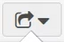
icon in the header. A list of header buttons available will appear.
There may be one or more header buttons to choose from. These header buttons can either be Run Report header buttons or Workflow Application Builder header buttons.
Click a Run Report Button. The Run Report window will open.
Under Report Objects, click Select. The Compliance Object Filter window will open.
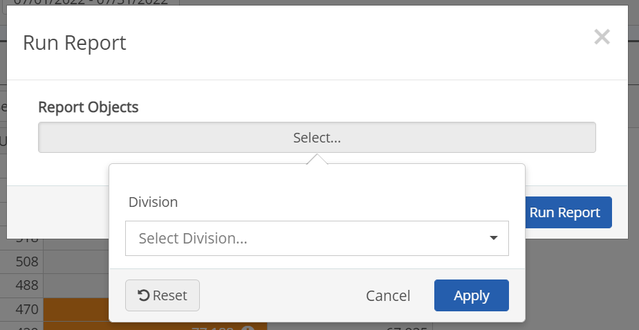
Filter for the object of interest, by filling in the dropdown textboxes.
Click Apply.
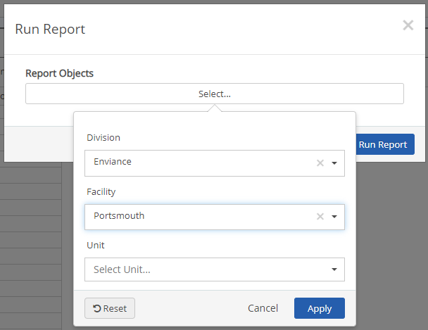
The Compliance Object Filter window will close.
On the Run Report window, click Run Report.
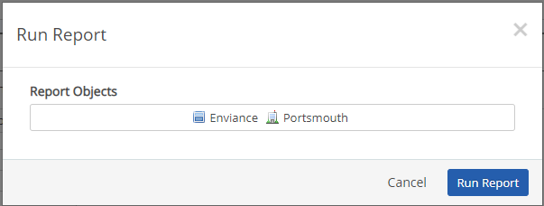
A spinner icon will display in the header of the portal page indicating the excel file is being created.
The Report Log window will open, once the excel report is generated.
To download the excel document, on the Report Log window, click the green download button.
The Report log, that has a green download button is the report that was just generated but has not been downloaded. The Issued date and time will also be an indication of when the Report was generated. The Report logs, that have a blue download button indicates that the generated excel document was previously downloaded and viewed.
If there is an excel template included, the excel document being downloaded will include the template format. If an excel template is not included, the excel document being downloaded will have the same format as panel exports.
If sub-report(s) were configured for the Run Report header button, they will also be included in the excel document as tabs.
To add a customized Run Report header button
In the Portal, navigate to a portal page, and then click the Page Settings icon
On the Page settings page, click the + Header Button. A drop-down menu will open
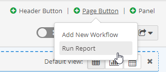
Click Run Report. The Run Report window will open.
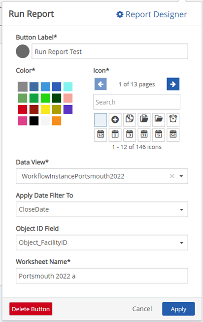
On the Run Report window, enter a Button Label.
Select a button color and an icon. A preview will display next to the Button Label field.
Fill in all mandatory field (*).
Fill in remaining fields, as required.
To create the Run Report header button:
Click Apply. The Run Report window will close,and the Run Report header button is created.
Click Report Designer. The Run Report header button is created, and the Report Designer window will open.
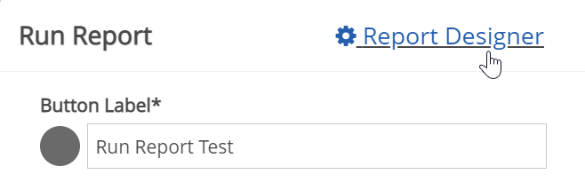
On the Report Designer window, the Report name will be the same value inputted in the Worksheet textbox on the Run Report window.
To add fields that you would like to include on your report, in the Field Selector section (left navigation panel) search fields using the search textbox, and click + to the right of a field. The field will move to the Applied Filters section.
To open a Column Edit window, left click a column field.
To remove a column field, on the Column edit window click Remove Column.
The field is removed and will display in the Field Selector Section.
By default, the first 10 fields will be added to the report.
If there is no existing excel template associated to the Run Report header button:
Click the Upload Excel Template button to import an excel template. The Upload File window will open.
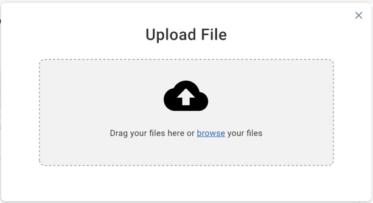
Drag or browse for the file you want to upload.
Once upload is completed, click Done.
If there is an existing excel template associated to the Run Report header button, the Upload Excel Template button is replaced with a drop-down textbox value set to Template uploaded.
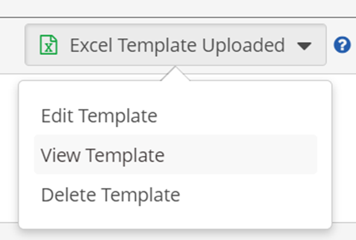
To edit an uploaded template
Click the drop-down textbox and click Edit Template. The Upload File window will open.
Upload the updated excel template. The new template will be saved as a new version of the original template.
To view an uploaded template
Click the drop-down textbox and click View Template. The template will be downloaded and can be opened.
To delete an uploaded template
Click the drop-down textbox and click Delete. “This will remove the template and all its previous versions. Are you sure?” prompt appears.
Click on the message to confirm.
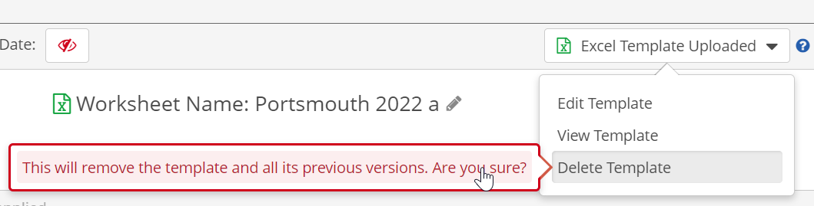
To add Sub-Reports, click the + icon to the right of the Sub-Reports section.
Sub-Reports contain more specific information that can be linked to the main report but will not display on your main report.
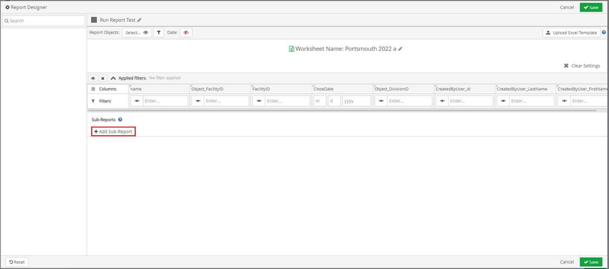
The Sub-Reports section expands below.
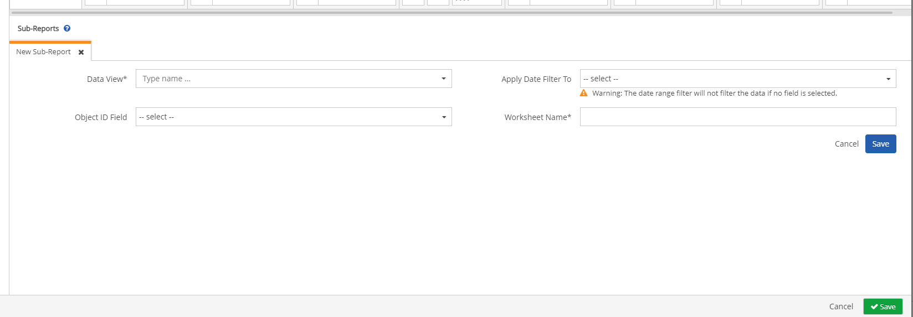
In the Sub-Reports section, fill in all fields.
To add another sub-report, click + Add sub-report.
To filter for a date range in which you want to view a data report, click the Date Range textbox. The Data Range window will open.
Users can select a pre-existing date range or Add New Date Range.
Click Apply.
In the Table Column Settings section, click a Columns Field. A Fields window will open.
To name the Field, fill in the Column Label name.
To turn on runtime filter capability, toggle on the Filter at Runtime option.
Click Apply.
Click Report Objects textbox. The Report Object Selector window will open.
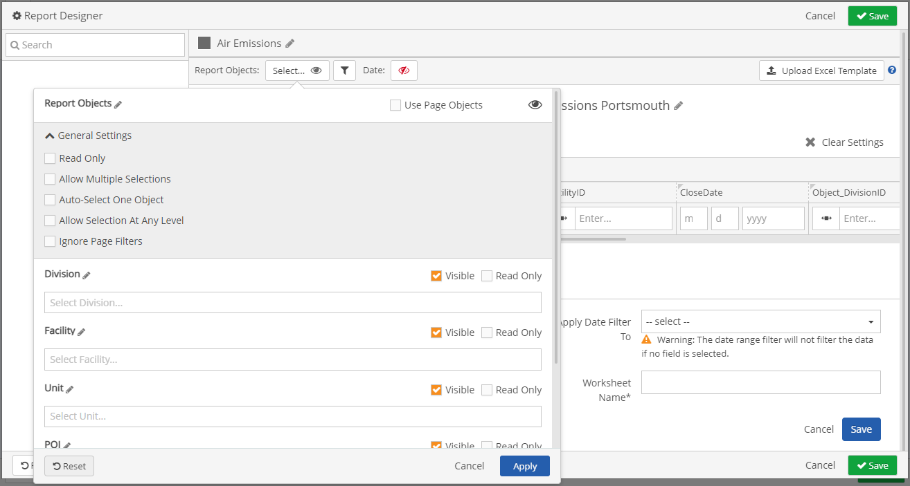
Fill in information as needed, and select preferred settings, and then click Apply. The Report Object Selector window will close.